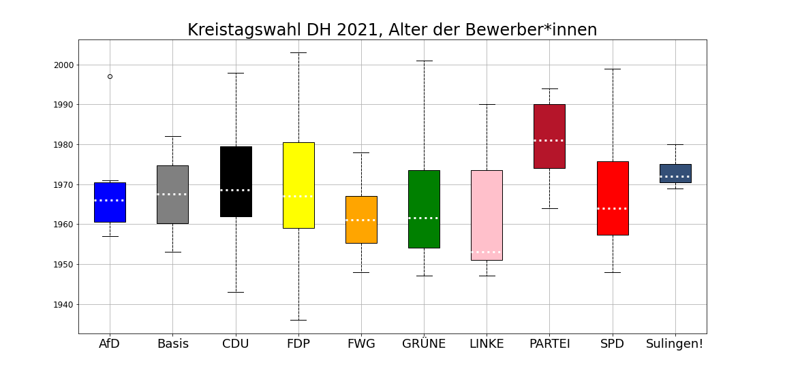

+++ Die PARTEI stellt die durchschnittlich jüngsten Berwerber*innen im Kreis! +++

(Grafik: eigene; Datenquelle: Öffentliche Bekanntmachung zur Wahl des Kreistages, Sulinger Kreiszeitung vom 04.08.2021. Einzelwahlvorschlag Brauer (geb. 1949) nicht berücksichtigt.